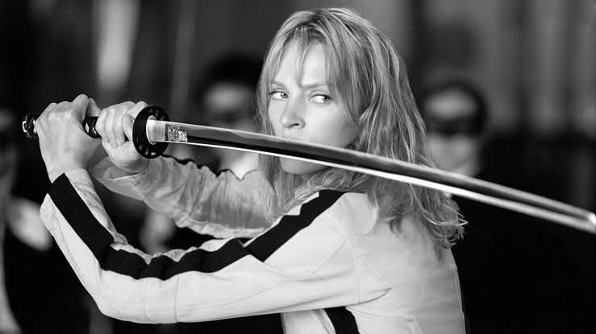
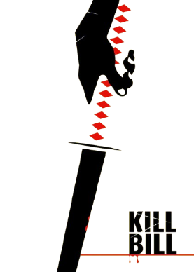
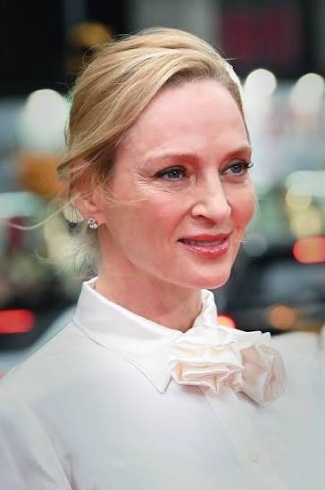
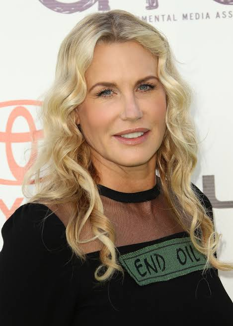
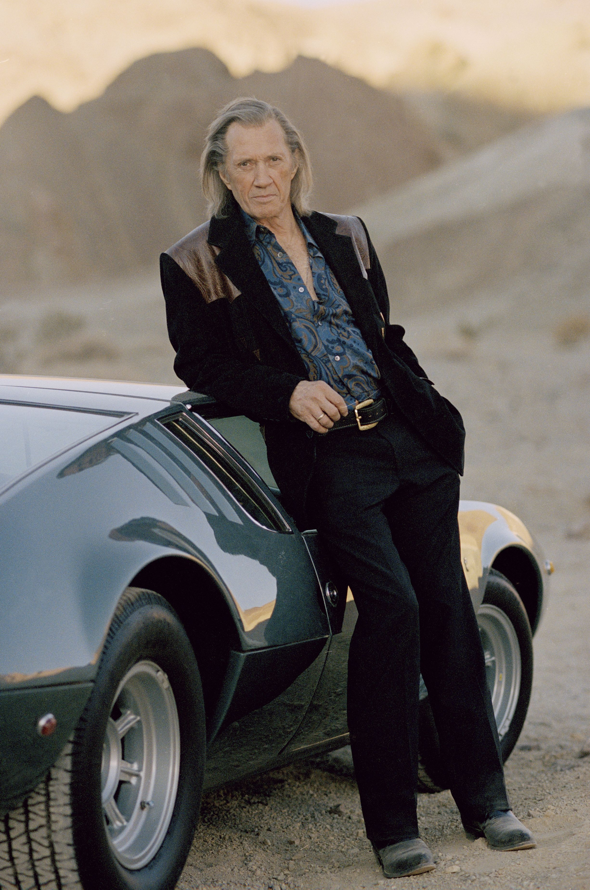
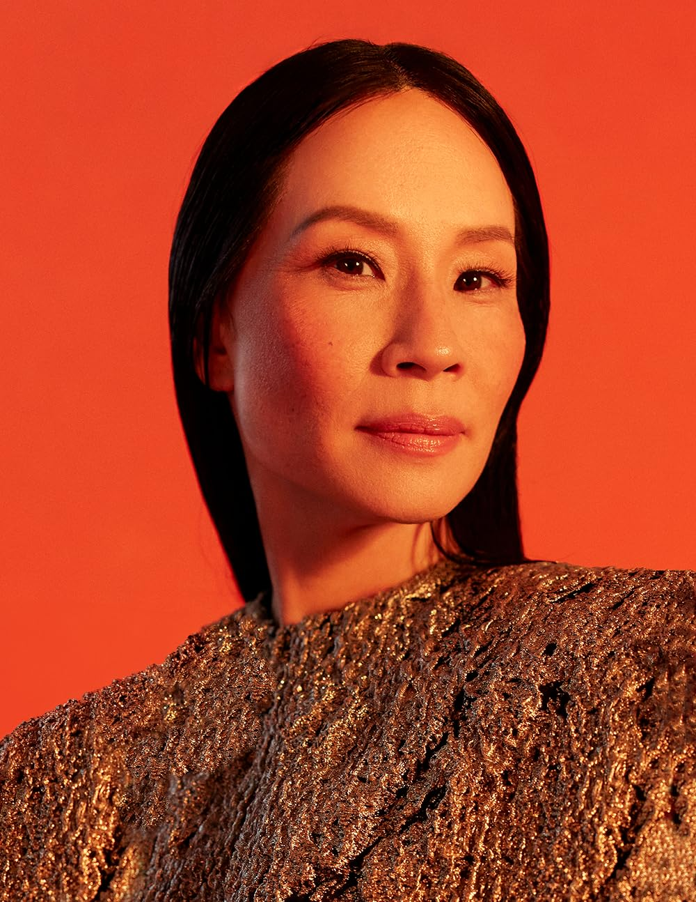
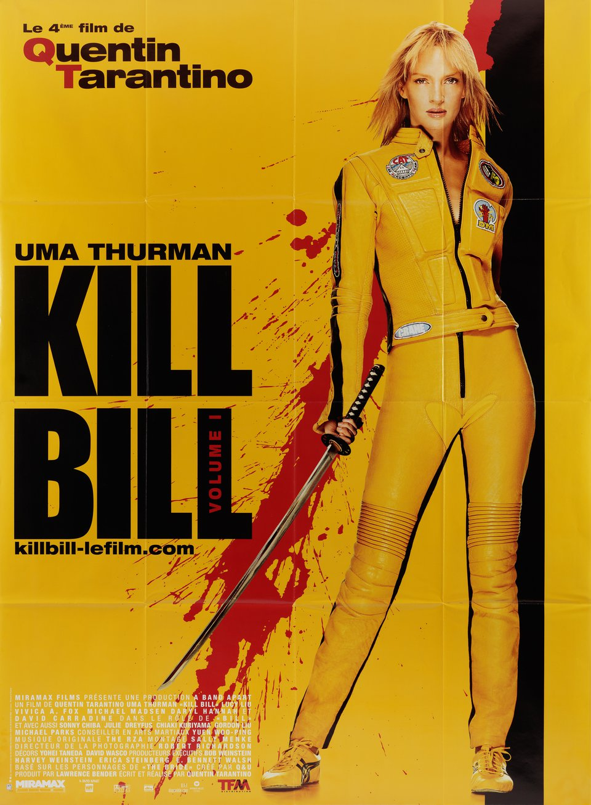
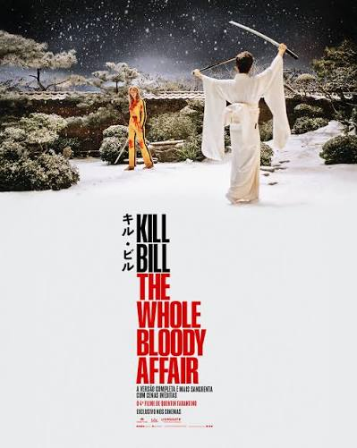
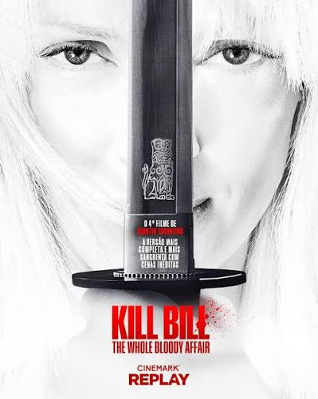
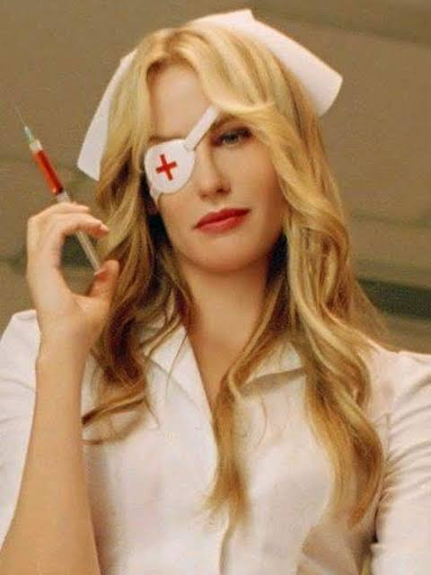

A noiva, uma ex-assassina, acorda de um coma de quatro anos após ser traída e baleada no dia de seu casamento por seu ex-amante Bill e seu antigo grupo de assassinos. Ela inicia uma jornada implacável de vingança para caçar e eliminar cada um dos responsáveis pelo atentado.


Uma Thurman, interpreta a personagem principal, Belatrix Kiddo (Mamba Negra).

Daryl Hannah, interpreta Elle Driver (Cobra Californiana).

David Carradine, interpreta Bill, o líder do grupo de assassinos.

Lucy Liu, interpreta O-Ren Ishii, (Boca de Algodão).




Quentin Tarantino deu a protagonista de Kill Bill à Uma Thurman como presente pelo seu aniversário de 30 anos, em 2000.
Foram utilizados 450 galões de sangue falso nos dois filmes de Kill Bill.
Quentin Tarantino escolheu três atores de diferentes nacionalidades para representar seus países.